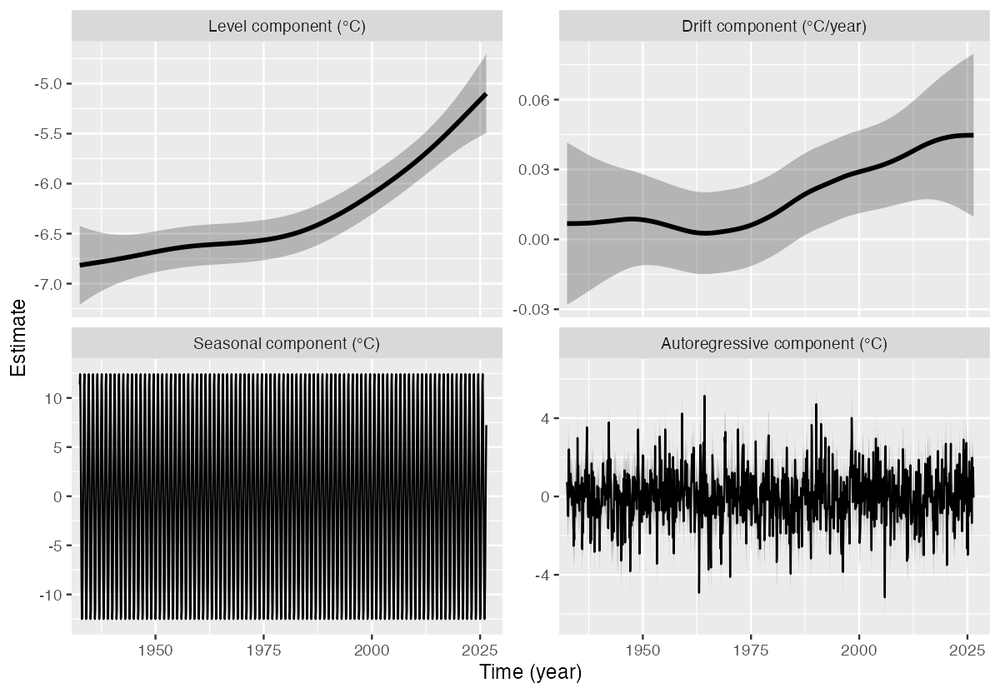

tempssm is an R package for state-space modeling of environmental temperature time series, including air and water temperature observations. It provides a practical framework for assessing how long-term trend, seasonal variation, autoregressive dependence, and optional exogenous effects contribute to observed temporal variation. The package facilitates the application of linear Gaussian state-space models estimated by Kalman filtering and smoothing, using the KFAS package as the computational backend (Helske, 2017).
Key Features
- Fits linear Gaussian state-space models to environmental temperature time series.
- Represents temperature dynamics using interpretable latent components: long-term trend, seasonal variation, autoregressive dependence, and optional exogenous effects.
- Supports arbitrary seasonal frequencies, while the current examples and validation focus primarily on monthly temperature data.
- Allows users to specify an arbitrary order of the autoregressive component (default: AR(1)).
- Includes time-series cross-validation tools for model evaluation.
Input Data Format
R ts objects are the primary input format for tempssm. The temperature series passed to tempssm() should be supplied as a univariate ts object, and optional exogenous variables can be supplied as univariate or multivariate ts objects. The ts class is base R’s standard format for regularly spaced time series (see the stats::ts documentation: https://search.r-project.org/R/refmans/stats/html/ts.html). Utility functions are included to help convert common tabular or observational data into ts objects before fitting.
The seasonal cycle used by tempssm() is taken from the frequency attribute of the input ts object. For example, frequency = 12 represents monthly data.
Prior Art and Scope
tempssm provides a domain-focused workflow for analyzing temperature time series with linear Gaussian state-space models. It brings together model construction, component extraction, uncertainty summaries, residual diagnostics, visualization, and time-series cross-validation in a single R package interface tailored to temperature applications.
The model can be viewed as an extension of a basic structural time-series model, in which the observed temperature series is decomposed into latent components such as a long-term trend, seasonal variation, autoregressive dependence, and optional exogenous effects. The mathematical formulation is described in the model specification vignette linked below.
The package builds on established statistical methodology, including linear Gaussian state-space modeling, Kalman filtering, and Kalman smoothing. Model estimation is handled through the KFAS package, which provides a general framework for state-space models in R.
Several other R packages support plotting, time-series handling, data input, and examples. In particular, ggplot2 is used for package plotting methods, zoo for selected time-series conversion utilities, and forecast in tutorial examples for basic time-series visualization.
The initial implementation was adapted from the supplementary code provided by Baba (2024), accompanying Baba et al. (2024), which analyzed sea temperature trends using a linear Gaussian state-space model. The supplementary code is publicly available at:
https://github.com/logics-of-blue/sea-temperature-trend-jogashima
Compared with that prior implementation, tempssm extends the workflow into a reusable R package interface with input validation, documented S3 methods, tests, diagnostics, cross-validation utilities, and examples for broader temperature time-series analysis.
Installation
# Install from Github
# install.packages("pak")
pak::pak("akihirao/tempssm")
# Alternative
# install.packages("devtools")
devtools::install_github("akihirao/tempssm")Documentation
A short tutorial is available in the package vignette:
https://github.com/akihirao/tempssm/blob/main/vignettes/getting-started.pdf
The model specification is described separately:
https://github.com/akihirao/tempssm/blob/main/vignettes/model-specification.pdf
A comprehensive reference manual (English) is available on the package site:
https://akihirao.github.io/tempssm/articles/tempssm_manual.html
For Japanese users, a detailed manual is also provided on the package site:
https://akihirao.github.io/tempssm/articles/tempssm_manual_jp.html
Basic Usage
Load the Package and Example Data
This example uses sst_niigata, a monthly sea surface temperature (SST) time series off Niigata, Japan, covering 2002 to 2023. The series is provided as a ts object and can be passed directly to tempssm().
Fit a State-Space Model
The function tempssm() fits a linear Gaussian state-space model to a temperature time series.
res <- tempssm(sst_niigata)The returned object is an S3 object of class "tempssm". Results can be inspected with standard methods.

The panels show the level component (long-term trend; upper left), drift component (rate of change in the long-term trend; upper right), seasonal component (lower left), and autoregressive component (lower right). The gray ribbons indicate pointwise 95% confidence intervals.
In this example, the estimated level component suggests a gradual long-term increase in SST. The seasonal component captures the recurring annual cycle, while the autoregressive component represents shorter-term departures from the trend and seasonal pattern.
For scripted workflows, plot_tempssm_components() returns the same component plot as a ggplot object; ggplot2::autoplot() is also available.
Use Your Own Data
For monthly temperature data stored in a CSV file, prepare columns named Year, Month, and Temp. Use NA for missing temperature values, and keep the corresponding Year and Month entries.
Year,Month,Temp
2010,8,13.6
2010,9,6.8
2010,10,NA
2010,11,-1.4
...The CSV file should be comma-separated and UTF-8 encoded. An example CSV file is included with the package.
path <- system.file(
"extdata",
"example_monthly_temp.csv",
package = "tempssm"
)
temp_ts <- tempssm::read_monthly_temp_ts(path)
res_csv <- tempssm(temp_ts)The helper function read_monthly_temp_ts() reads this type of CSV file and converts it into an R ts object for use with tempssm(). If your data are already stored as a ts object, you can pass them directly to tempssm().
References
Baba, S. (2024). Supplementary code and test data for estimating sea temperature trends using a linear Gaussian state-space model. GitHub repository: https://github.com/logics-of-blue/sea-temperature-trend-jogashima
Baba, S., Ishii, H., and Yoshiyama, T. (2024). Estimating sea temperature trends using a linear Gaussian state-space model in Jogashima, Kanagawa, Japan. Bulletin of the Japanese Society of Fisheries Oceanography, 88(3), 190-199. (In Japanese with an English abstract.) https://doi.org/10.34423/jsfo.88.3_190
Helske, J. (2017). KFAS: Exponential family state space models in R. Journal of Statistical Software, 78(10), 1-39. https://doi.org/10.18637/jss.v078.i10